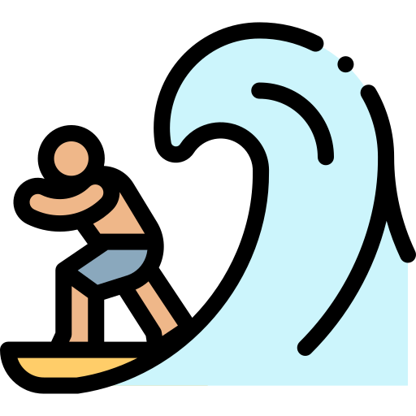
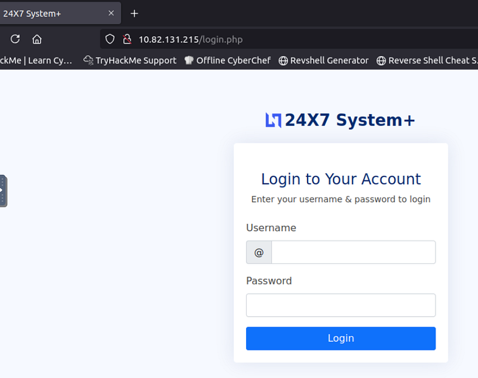
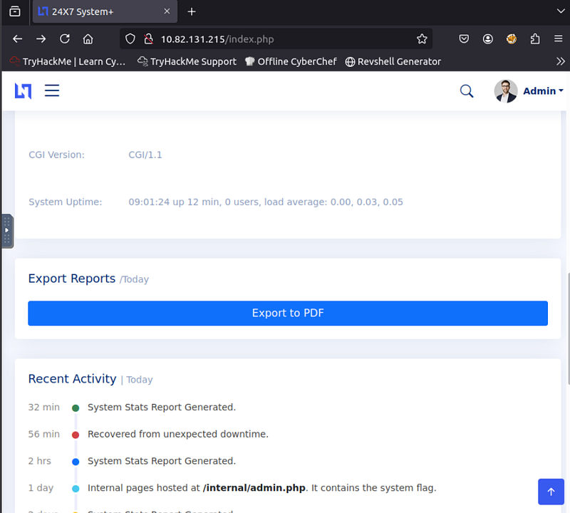
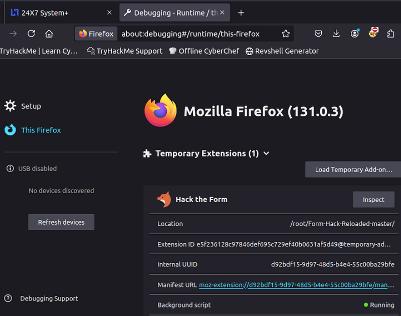
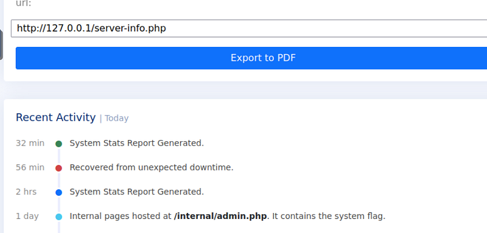
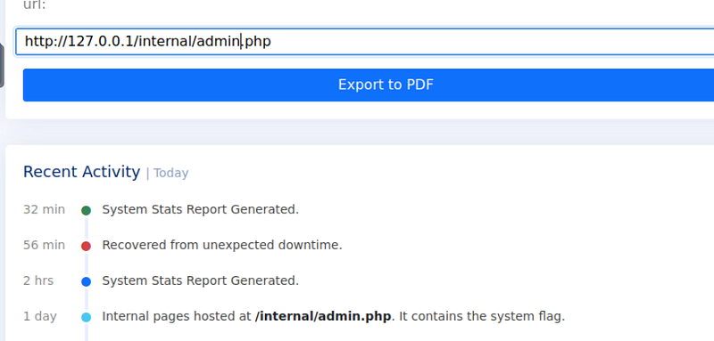
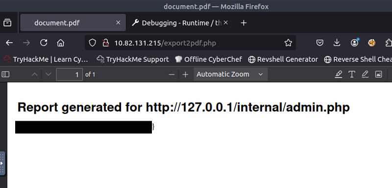

OSCP · OSWP · PWPP · PWPA · PAPA · EnCE · Linux+ · LPIC-1 · Network+ · Security+ · Pentest+ · eJPT · eWPT · BSc · PGCert
Surfer Writeup (TryHackMe) Writeup

Step 1: Recon
I loaded up the URL and browsed to it. This brought me to a login box. I tried “admin” for the username and “admin” for the password (expecting it not to work, but it did) and I was in right away.

The page now showed a dashboard consisting of sales information, along with revenue and visitors. In the top right-hand side, there was an “Admin” profile which didn’t seem to lead anywhere interesting.
The only place which seemed to do anything was the “Export to PDF” function which is at the bottom of the dashboard page.

I viewed the source of the page and could see a hidden field which looked interesting. When you click “Export to PDF”, it uses the value in the hidden field and sends it to export2pdf.php.
Looking back at the “Recent Activity” in the screenshot above, we can see it looks like that /internal/admin.php is hosting the flag.
Step 2: Installing my add-on
Time to install the add-on “Form-Hack-Reloaded”, which you can get from here. This is a forked repo of an old add-on from 2016. The “Reloaded” version is one that I heavily modified using 100% AI to bring it up to 2025 requirements for security assessments. “Form-Hack-Reloaded” can toggle on/off hidden fields within a page, and when you refresh the page, it persistently makes the hidden fields visible (or not, depending on if it’s on or off). There is even a red/green light to show if the tool is working or not.

Going to: “about:debugging” (without quotes) in Firefox, then “This Firefox” in the top-left allows you to “Load a Temporary Add-on”. At the time of writing, Form-Hack-Reloaded isn’t available in the Chrome or Mozilla add-on stores, but it will be soon. Make sure you’ve extracted the files from the zip and load the add on by browsing to the extracted files and selecting main.js.
Step 3: Viewing Hidden Fields

Once the add-on was running, it shows all hidden fields so we can edit it in the page, rather than editing source code. From here, I changed the URL to display http://127.0.0.1/internal/admin.php and hit “Export to PDF”

The flag was now revealed due to SSRF being the exploit here.

Final thoughts: Another very enjoyable room. Simple enough to be done relatively quickly, but the room teaches you to look at source code as the vulnerability might be hiding in plain sight. 9/10 room.
🍺 Quick message to readers: if my writeups help you, please consider a small donation to my buymeacoffee link here. This is not required but is very much appreciated! 🍺